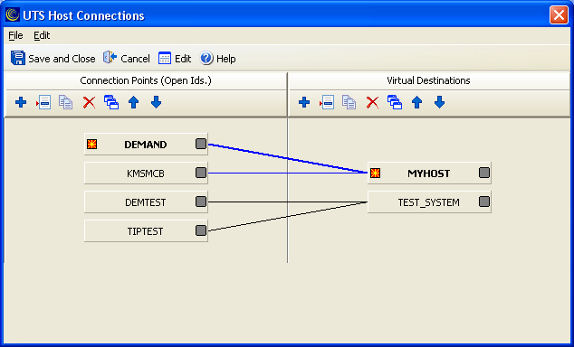

The UTS Host Connections dialog can be used to visually manage multiple host connections.

Save and Close
Cancel and Close
Open String
Close String
Session opened string
Session closed string
Enter session string
Invalid destination string
Output interrupt string
Open in progress string
Sort ALL Lists: Sorts the configured connection points and virtual destinations in alphabetical order.
The Connection Points and Virtual Destinations work areas each have a set of the following buttons:
| Icon | Name | Description |
|---|---|---|
| Add new Destination | Click to add a new virtual destination. | |
| Edit selected Destination | Click to edit the selected virtual destination. | |
| Duplicate selected Destination | Click to duplicate the selected virtual destination. | |
| Delete selected Destination | Click to delete the selected virtual destination. | |
| Sort Destinations | Click to sort all configured virtual destinations in alphabetical order. | |
| Move selected Destination Up | Click to move the selected virtual destination up one position. | |
| Move selected Destination Down | Click to move the selected virtual destination down one position. |